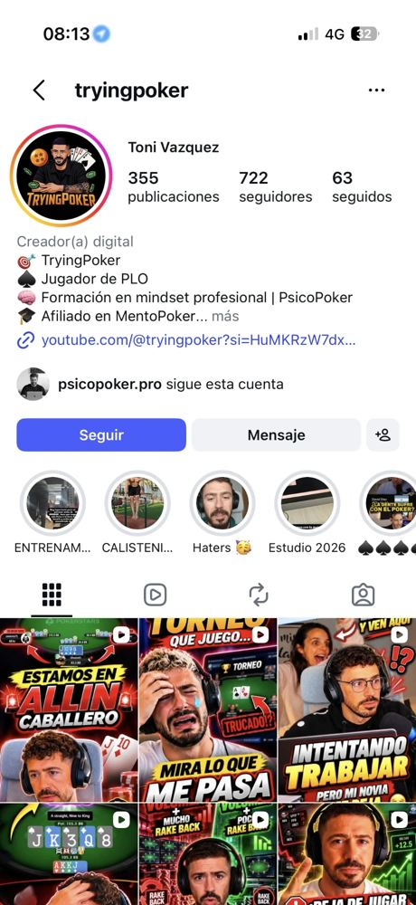

Quien llega a tu perfil viene de un solo reel y decide en tres segundos si te sigue. Hoy el perfil cuenta tus afiliaciones. La propuesta es que cuente para quién eres y qué va a encontrar aquí.

Maqueta. La foto es un fotograma de tu vídeo de PsicoPoker y solo sirve para enseñar el encuadre. El dominio del link es un ejemplo.
La caricatura funciona en YouTube, pero en Instagram tu foto aparece a 40 píxeles al lado de cada comentario y cada historia. Quien acaba de verte en un reel tiene que reconocerte en ese círculo.
El banner de YouTube, la página del link y la marca de agua de los vídeos.
Es la línea en negrita, no el usuario. Instagram la usa para las búsquedas. Hoy dice "Toni Vazquez" y nadie te encuentra buscando poker o PLO. "Poker" va sin tilde porque es como más se busca.
Hoy la bio es una lista: TryingPoker, PLO, PsicoPoker, MentoPoker. La primera línea tiene que decirle al que empieza qué va a ganar siguiéndote. Los códigos salen de aquí y pasan al link y a la destacada Códigos.
Por confirmar contigo: si encaja lo de las 8 horas de trabajo. El contador cuenta los emojis como Instagram, que puede variar en uno o dos caracteres.
Limpiar el enlace. El que tienes arrastra un código de rastreo que se ve en la bio:
youtube.com/@tryingpoker?si=HuMKRzW7dx…
youtube.com/@tryingpoker
Una página propia "Empieza aquí", que es justo lo que promete la bio. Cuatro bloques y en este orden:
Cinco, con nombres cortos para que no se corten ("ENTRENAM…") y todas con la misma portada: fondo negro y un icono naranja.
Quién eres, para quién es la cuenta y por dónde arrancar. Lo primero que se ve.
NuevaGráficas de cada mes, el mejor y el peor, el mayor pinchazo del año.
Absorbe "Estudio 2026"Cómo empezaste, cómo combinas trabajo y póker, tu paso por PsicoPoker.
NuevaLa vida del jugador fuera de la mesa: entreno, estudio y horarios.
Junta Entrenamiento y CalisteniaMentoPoker, Hand2Note y salas: qué te da cada uno y cómo se usa.
Saca los códigos de los copys"Haters" se borra. Si hay respuestas buenas, más adelante pasan a una sexta destacada, Dudas.
Sin nada fijado, arriba del todo aparece lo último que subiste. Fijar tres posts son cuatro toques y es el cambio que más rinde de todo el perfil.
Reel nuevo: "Tengo trabajo y quiero vivir del póker. Esto es lo que estoy haciendo".
"Intentando trabajar… pero mi novia". Ya cuenta lo de trabajo y póker, con humor.
El resultado del mes recortado de tu resumen de YouTube. Se cambia cada mes.
"Deja de jugar…", el de la gráfica de +12,5 bb/100.
El sistema VIP de Winamax explicado en reel (tu vídeo de 3.000 visualizaciones) o un carrusel "Empieza en PLO".
"+Mucho rakeback vs poco rakeback".
| Apartado | Hoy | Con los cambios | Qué cambia |
|---|